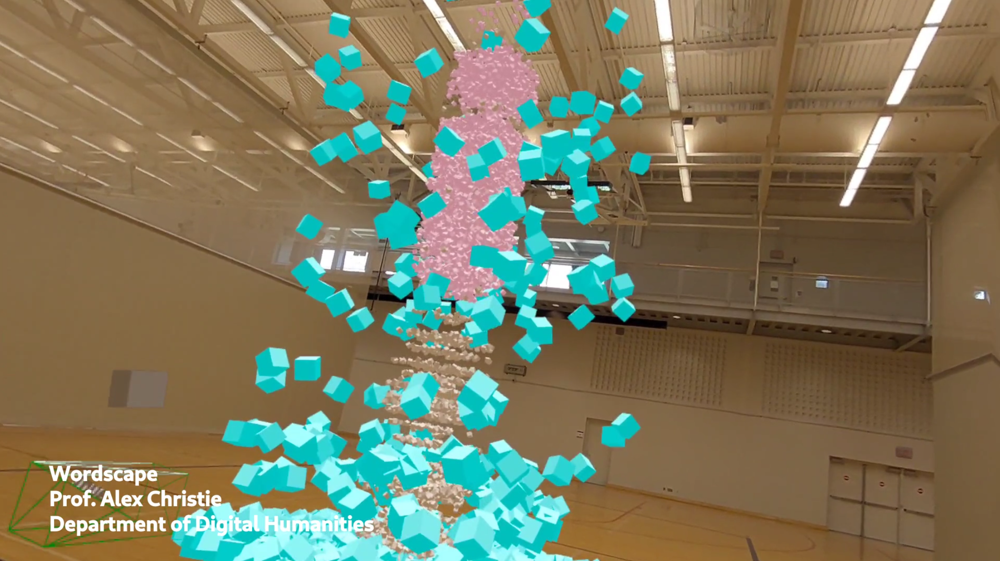
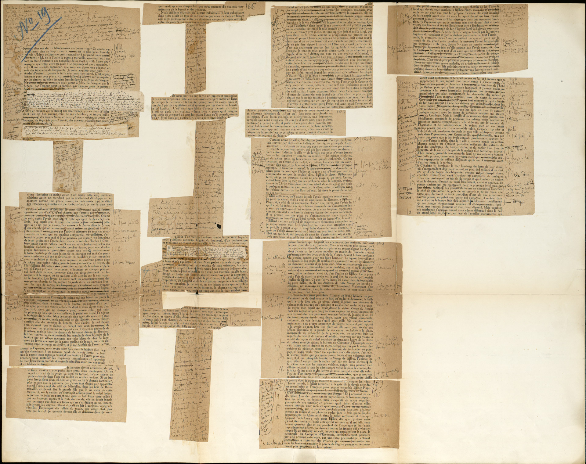
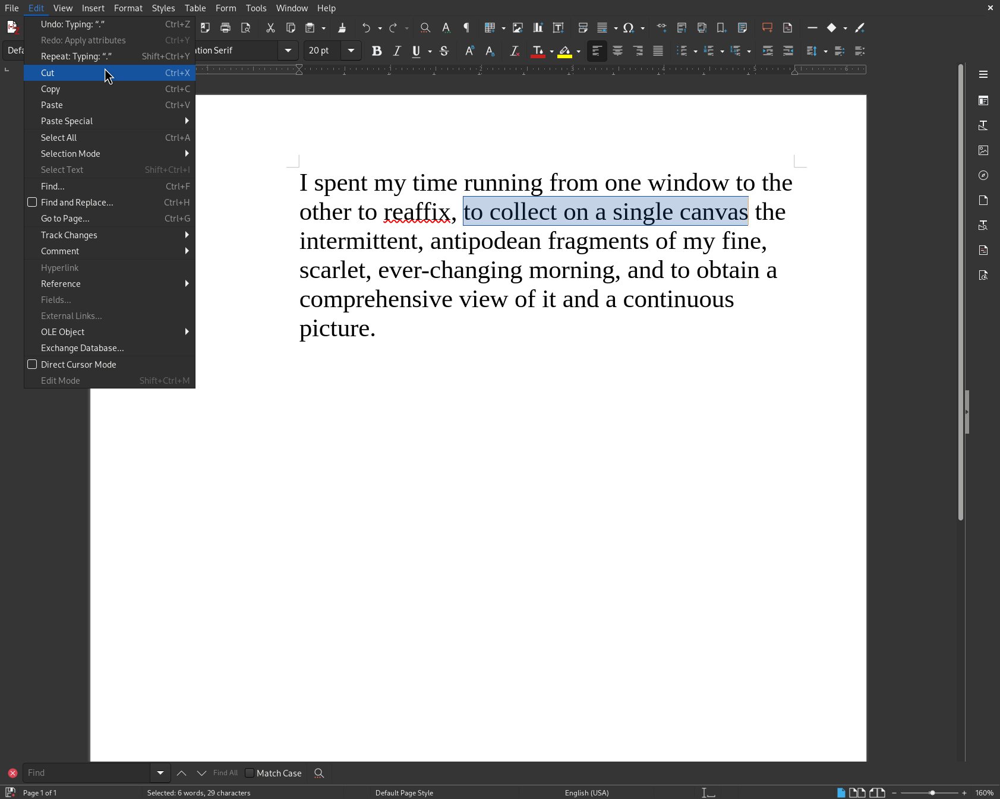
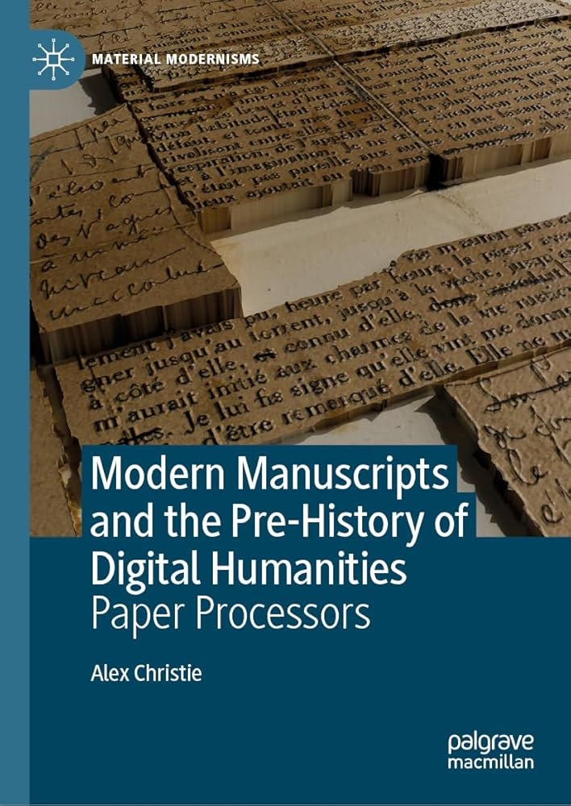
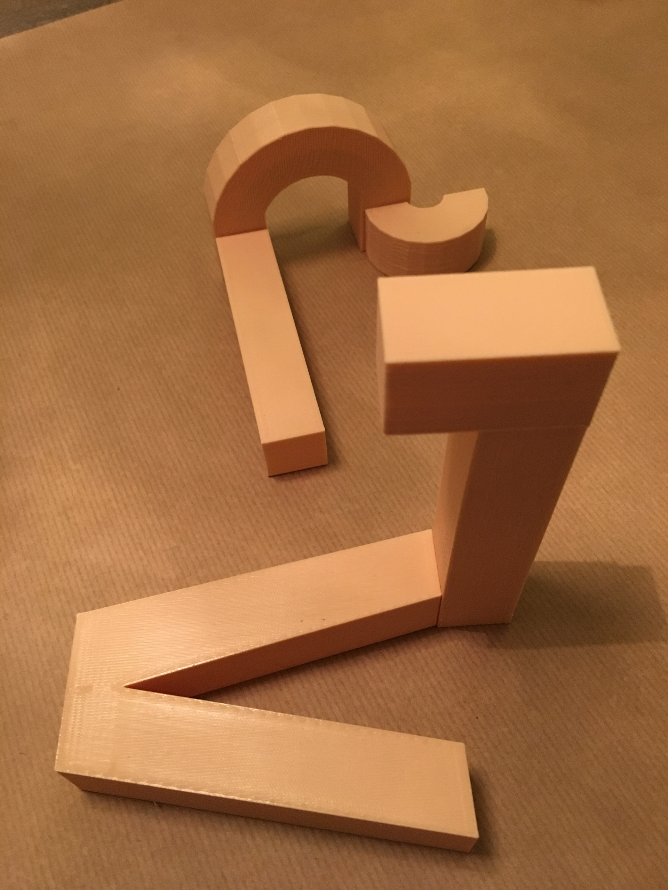
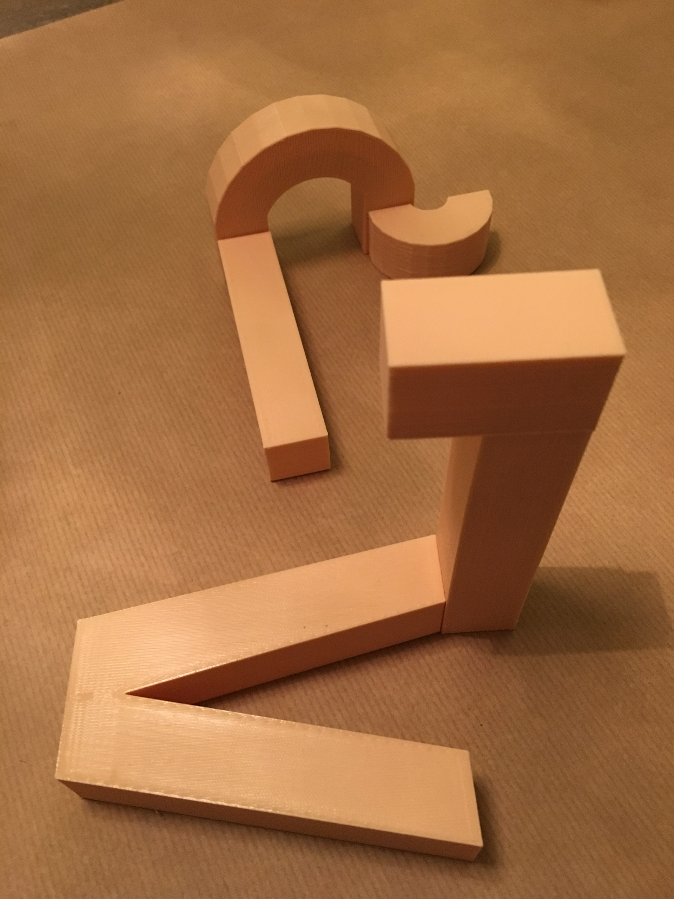
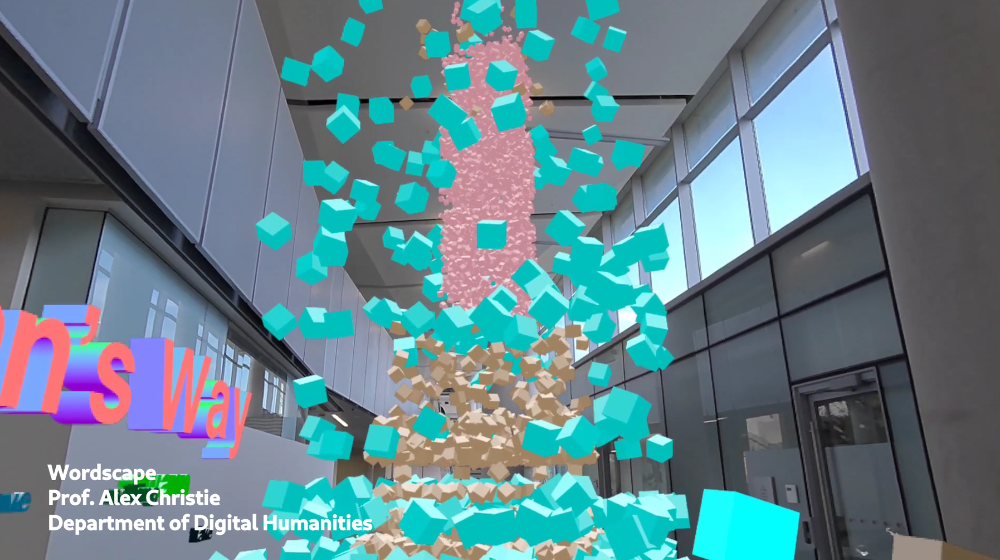

Paper Processors
Modern Manuscripts in the Era of Spatial Computing

Alex Christie
Modernist Studies Association 2024 Annual Conference
Follow along at axchristie.github.io/presentations/msa2024
Cahier Violet
Marcel Proust

Cut, copy, paste

Paper Processing

- Examines where modernist authors experimented with proto-digital writing methods by hand, anticipating (and complicating) today's digital humanities.
- Sees the novel as something that is not so much penned as it is assembled and manufactured, reframing compositon as a form of making.
- Instead of looking to computers as sources of inspiration, the authors discussed turned to twentieth-century media and their ability to access new layers of the material world.
Paper Processors
- Analog: Dream of Lost Past
- Raymond Roussel
- Marcel Proust
- Digital: Anxious in the Now
- Samuel Beckett
- Mina Loy
Modernist Studies and the Digital Humanities
Flipping the Script
- The Digital Humanities should move forward by revisiting the past.
- Reviving modernist experimental practices as design principles for DH work.
- How might DH revive text as a kinesthetic and three-dimensional medium?
- How might text processing move beyond a purely semantic engagement with text?
- What would a cubist data visualization look like? How would it work?
Margaret Konkol
Build Your Own A, B, C
 

Wordscape
- An embodied and spatially-aware data visualization platform.
- Allows users to handle, arrange, and visualize textual data in an spatial computing environment.
- Combines hand tracking, text processing, and 3D graphics techniques to imagine the future of DH research.
- Available as a public beta. (Requires a headset)
(Non-)Technical Discussion
- Ruby on Rails
- Three.js
- Openscad